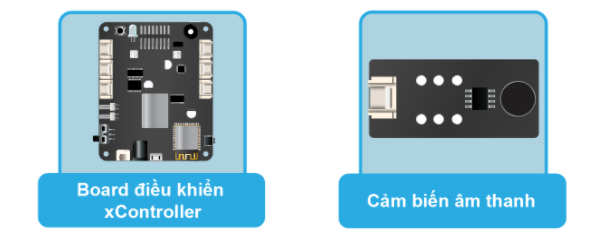
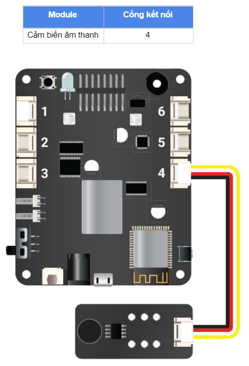

10. Bài học 7: Vỗ tay thay đổi màu đèn LED
Mục tiêu
Tìm hiểu về cảm biến âm thanh và ứng dụng vào bật tắt đèn LED RGB tích hợp trên xController.
Kiến thức mới
Cảm biến âm thanh
Cảm biến âm thanh có thể dùng để phát hiện và đo cường độ âm thanh của môi trường xung quanh. Chúng ta có thể ứng dụng cảm biến này để điều khiển đèn LED RGB bằng tiếng vỗ tay.
Thiết bị cần sử dụng
{kind=link}
Kết nối phần cứng
{kind=link}
Viết chương trình
Mở phần mềm uPyCraft.
Tạo một file chương trình mới (
File > New) và lưu với tên main.py bằng cách chọn menuFile > Save….Copy đoạn code sau, click vào nút
DownloadAndRunđể chạy chương trình.
led_state = 0
sound_value = pin41.read_analog()
while True:
print(sound_value) # In giá trị cảm biến âm thanh
if sound_value > 1000:
led_state = 1 - led_state
time.sleep(0.3)
if led_state == 0:
led_onboard.show(0, (0, 0, 0))
else:
led_onboard.show(0, (255, 0, 0))
time.sleep(1)
Sau khi nạp chương trình, Bạn có thể xem giá trị của cảm biến âm thanh trong cửa sổ Terminal.
Giải thích chương trình
Các câu lệnh khai báo đối tượng XController và các biến sẽ tương tự như các bài trước. Tuy nhiên, chúng ta cần để ý đoạn code đảo trạng thái của đèn LED RGB như sau:
# nếu giá trị cảm biến lớn hơn 1000 thì đảo trạng thái bật tắt của đèn LED
if sound_value > 1000:
led_state = 1 - led_state
time.sleep(0.3)
Câu lệnh if sẽ kiểm tra kết quả đo được có lớn hơn 1000 hay không, nếu có thì mới đảo trạng thái đèn LED. Giá trị 1000 ở đây gọi là ngưỡng, do chúng ta tự đo và ấn định. Trong trường hợp này, nếu chúng ta để ngưỡng càng nhỏ thì chương trình sẽ chạy càng nhạy.
led_state = 1 - led_state
Đảo trạng thái LED (led_state) đơn giản từ 0 thành 1 hoặc từ 1 thành 0: Nếu led_state đang có giá trị là 0 thì led_state mới bằng 1 - 0, sẽ thành 1. Ngược lại, nếu led_state đang là 1 thì led_state mới (= 1 - 1) sẽ thành 0.
time.sleep(0.3)
Sau khi xử lý xong, chúng ta cần phải tạm dừng chương trình trong một thời gian ngắn để tránh trường hợp do chương trình chạy quá nhanh, lúc đó tiếng động truyền vào kéo dài chưa kịp dứt thì sẽ bị xử lý nhiều lần, tạo ra kết quả bật tắt không mong muốn.
# bật tắt đèn LED RGB dựa vào trạng thái đã được xử lý
if led_state == 0:
led_onboard.show(0, (0, 0, 0))
else:
led_onboard.show(0, (255, 0, 0))
Cuối vòng lặp, chúng ta sẽ dùng cấu trúc if else để bật tắt đèn LED, tùy vào giá trị của biến led_state. Hàm để bật tắt LED RGB (thực chất là thay đổi màu vì ta chỉ sử dụng màu đỏ) là hàm led_onboard.show() đã được giải thích ở bài học trước.
Khi chương trình chạy, đèn LED sẽ thay đổi màu nếu phát hiện âm thanh của môi trường xung quanh đủ lớn.